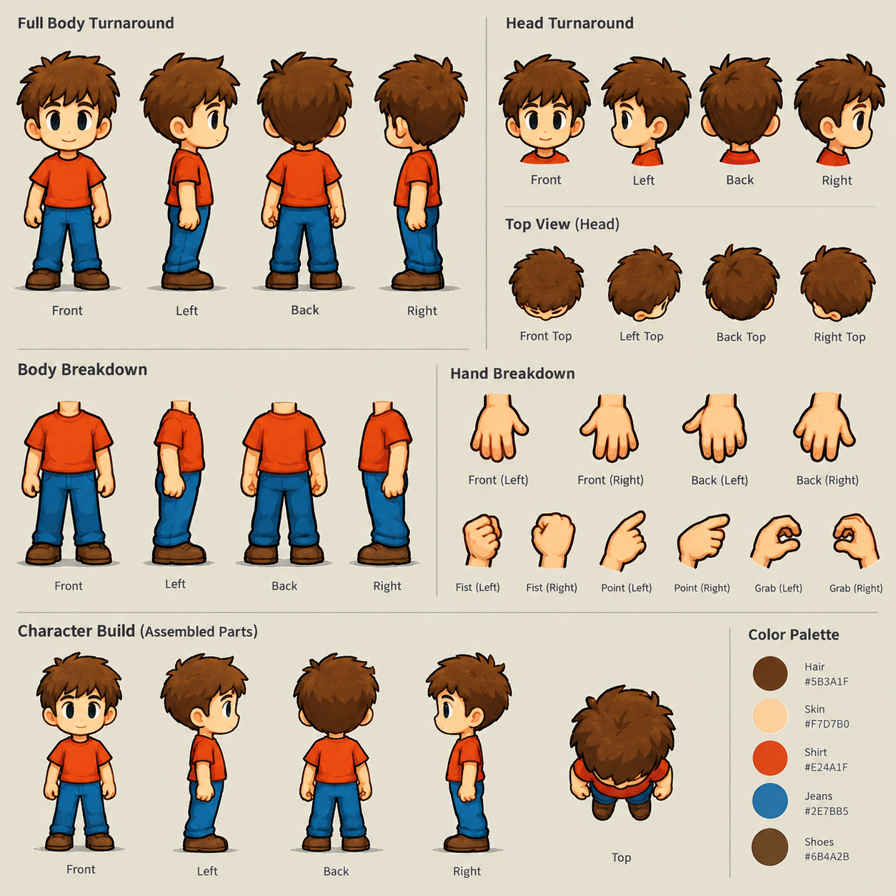
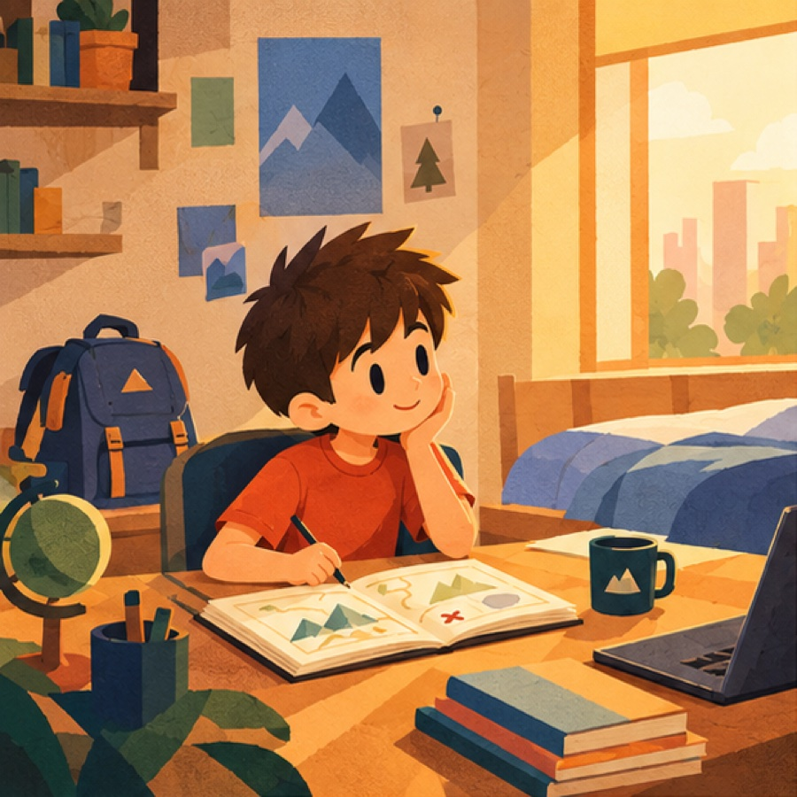
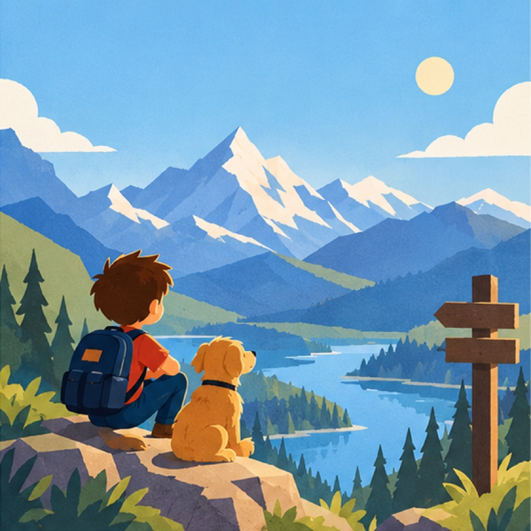
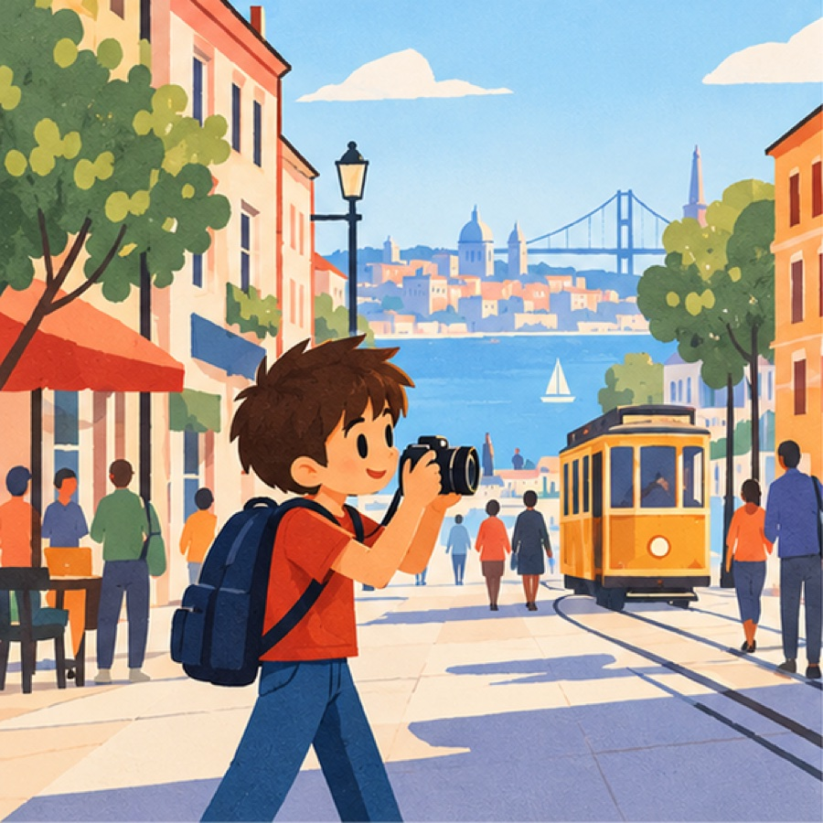

Curiosity,
told as a story.
Ask Romeo anything. A minute later, you're watching the answer.
We've never had more information, and never understood less of it. We skim walls of text, scroll past feeds, and forget most of it by dinner.
Nobody forgets a good story, though. So we built something that tells one.
01Ask
Ask it the way
you'd ask a friend.
Out loud or typed. The reply isn't a page of links. It's a short story you can watch, and you can keep asking while it plays.
Why is gas so expensive in San Francisco?
How does the rest of California compare?
02Create
What happens
in that minute.
Romeo listens
Your question, in your words. No keywords, no prompts.
Reads the web
Sources, numbers and context, boiled down to what matters.
Writes, draws, narrates
A script made for listening, every scene painted for your question, and a voice.
Listens again
Tap the mic mid-story. The next scene is made while you watch.
“Why is gas so expensive in San Francisco?”
Searching the web
03Try it
Go on, tap the mic.
A replay of the first prototype, right here in the browser. No mic access needed.
The first prototype, replayed. No mic needed.
04The storyteller
The same friend,
every time.
Romeo is one hand-drawn character who travels between four worlds, so a story about markets and a story about sea turtles still feel like they came from the same place.




05Library
A library of
good questions.
Watch what other people wondered about, and share the stories you make with a link.
Why do we still learn
from walls of text?
Before you ask.
How long does a story take?
About a minute from question to playing. Follow-ups are made in the background while you keep watching.
Where do the facts come from?
Romeo searches the web for each question and writes from what it finds, so the numbers come from real sources.
What can I ask about?
News, ideas from class, money, science, places. If you're curious about it, ask.
Can I share what I make?
Yes. Every story has its own link, and the ones you share can appear in the library.
How do I get it?
Romeo is on TestFlight for iPhone, and you can try it on the web today.